By: Team W11-B1 Since: Sep 2107 Licence: MIT
- 1. Welcome to Contact Plus
- 2. User Interface
- 3. Quick Start
- 4. Features
- 4.1. Viewing help :
help - 4.2. Adding a person:
add - 4.3. Listing all persons :
list,l - 4.4. Editing a person :
edit,e - 4.5. Locating persons by name:
find,f - 4.6. Deleting a single person :
delete - 4.7. Selecting a person :
select,s - 4.8. Listing entered commands :
history,h - 4.9. Undoing previous command :
undo,u - 4.10. Redoing the previously undone command :
redo,r - 4.11. Clearing all entries :
clear,c - 4.12. Exiting the program :
exit - 4.13. Deleting a tag :
deletetag[Since v1.0] - 4.14. Alias for commands [Since v1.0]
- 4.15. Locating persons by tag:
search + tag name[Since v1.1] - 4.16. Add second phone number for a person [Since v1.1]
- 4.17. Locating persons by multiple criteria:
multifilter[Since v1.1] - 4.18. Autocomplete command names [Since v1.2]
- 4.19. AutoCorrect command [Since v1.2]
- 4.20. Deleting multiple persons :
delete index/another index/…[Since v1.2] - 4.21. Viewing Weather Forecast [Since v1.3]
- 4.22. Extended autocomplete for commands [Since v1.3]
- 4.23. Keyboard shortcuts [Since v1.3]
- 4.24. Add tasks [Since v1.3]
- 4.25. List tasks [Since v1.4]
- 4.26. Delete tasks :
deletetask - 4.27. Sound effect for system events [Since v1.3]
- 4.28. Edit task [Since v1.4]
- 4.29. Clear task [Since v1.4]
- 4.30. Switch theme [Since v1.5]
- 4.31. Tab Switching [Since v1.5]
- 4.32. Tag use emoji :
tag emoji[Coming in V2.0] - 4.33. Add non-English words as input [Coming in V2.0]
- 4.34. Add push notification [Coming in V2.0]
- 4.35. Saving the data
- 4.1. Viewing help :
- 5. Command Summary
- 6. Keyboard Shortcuts Summary
- 7. Command Alias Summary
- 8. FAQ
1. Welcome to Contact Plus
Contact Plus is a command-line based contact-managing application. This application allows you to manage your contact list on your computer. Also, Contact Plus can serve as a task managing application,
which allows you to record your upcoming appointments, events and tasks. We strive to provide comprehensive services for busy students as well as anyone who needs a contact-managing application.
This guide will help you get familiar with the features of Contact Plus. If you encounter any problems or doubts, please press F1 or type Help in commmand box (refer to User Interface) for more information.
2. User Interface
This is recommended to get familiar with the names of the components on this user interface as this guide will frequently refer to these names. The names of the components on this user interface are shown in the following image:
3. Quick Start
-
Ensure you have Java version
1.8.0_60or later installed in your Computer.Having any Java 8 version is not enough.
This app will not work with earlier versions of Java 8. -
Download the latest
addressbook.jarhere. -
Copy the file to the folder you want to use as the home folder for your Address Book.
-
Double-click the file to start the app. The GUI should appear in a few seconds.
-
Type the command in the command box and press Enter to execute it.
e.g. typinghelpand pressing Enter will open the help window. -
Refer to the command-summary section below for the complete list of commands.
4. Features
Command Format
-
Words in
UPPER_CASEare the parameters to be supplied by the user e.g. inadd n/NAME,NAMEis a parameter which can be used asadd n/John Doe. -
Items in square brackets are optional e.g
n/NAME [t/TAG]can be used asn/John Doe t/friendor asn/John Doe. -
Items with
… after them can be used multiple times including zero times e.g.[t/TAG]…can be used ast/friend,t/friend t/familyetc. -
Parameters can be in any order e.g. if the command specifies
n/NAME p/PHONE_NUMBER,p/PHONE_NUMBER n/NAMEis also acceptable.
4.1. Viewing help : help
Command Format: help
Keyboard shortcut: F1
UI: Menu bar - Help
4.2. Adding a person: add
Adds a person to Contact Plus
Command Format: add n/NAME p/PHONE_NUMBER p2/PHONE_NUMBER or '-' e/EMAIL a/ADDRESS [t/TAG]…
Keyboard shortcut: control + a/A
|
A person can have any number of tags (including 0) A person can add the symbol '-' if a second phone number is not required for the contact Person names should only contain alphanumeric characters and spaces, and it should not be blank Person emails should be 2 alphanumeric/period strings separated by '@' Phone numbers can only contain numbers, and should be at least 3 digits long Tags names should be alphanumeric |
Examples:
-
add n/John Doe p/98765432 p2/61234567 or '-' e/johnd@example.com a/John street, block 123, #01-01 -
add n/Betsy Crowe t/friend e/betsycrowe@example.com a/Newgate Prison p/1234567 t/criminal
4.3. Listing all persons : list, l
Shows all the contacts that you have added to Contact Plus.
Command Format: list or l
4.4. Editing a person : edit, e
If you need to update your contacts' information, you can do so with this command.
Command Format: edit INDEX [n/NAME] [p/PHONE] [p2/PHONE] [e/EMAIL] [a/ADDRESS] [t/TAG]…,
or e INDEX [n/NAME] [p/PHONE] [p2/PHONE] [e/EMAIL] [a/ADDRESS] [t/TAG]…
Keyboard shortcut: control + e/E
4.4.1. Description
-
A person can have any number of tags (including 0).
-
A person can add the symbol '-' if a second phone number is not required for the contact.
-
Person names should only contain alphanumeric characters and spaces, and it should not be blank.
-
Person emails should be 2 alphanumeric/period strings separated by '@'.
-
Phone numbers can only contain numbers, and should be at least 3 digits long.
-
Tags names should be alphanumeric
4.4.2. Examples
Your input |
Output |
|
Updates the phone number and email address of the 1st person to |
|
Updates the name of the 2nd person to |
4.5. Locating persons by name: find, f
Finds persons whose names contain any of the given keywords.
Command Format: find KEYWORD [MORE_KEYWORDS], or f KEYWORD [MORE_KEYWORDS]
Keyboard shortcut: control + f/F
Examples:
-
find John
ReturnsjohnandJohn Doe -
find Betsy Tim John
Returns any person having namesBetsy,Tim, orJohn
4.6. Deleting a single person : delete
Deletes the person, that you have specified, from Contact Plus.
Command Format: delete INDEX, or d INDEX
Keyboard shortcut: control + d/D
| This function deletes ONE person only. For deleting multple persons simultaneously, see section 3.20. |
4.6.2. Examples
Your input |
Result |
*Note that |
Deletes the 2nd person in |
* Note that |
Deletes the 1st person in the results of the |
4.7. Selecting a person : select, s
Selects the person identified by the index number used in the last person listing.
Command Format: select INDEX or s INDEX
Examples:
-
list
select 2
Selects the 2nd person inContact Plus. -
find Betsy
select 1
Selects the 1st person in the results of thefindcommand.
4.8. Listing entered commands : history, h
Lists all the commands that you have entered in reverse chronological order.
Command Format: history
|
Pressing the ↑ and ↓ arrows will display the previous and next input respectively in the command box. |
4.9. Undoing previous command : undo, u
Restores Contact Plus to the state before the previous undoable command was executed.
Command Format: undo, u
|
Undoable commands: commands that modify the content in |
Examples:
-
delete 1
list
undo(reverses thedelete 1command) -
select 1
list
undo
Theundocommand fails as there are no undoable commands executed previously. -
delete 1
clear
undo(reverses theclearcommand)
undo(reverses thedelete 1command)
4.10. Redoing the previously undone command : redo, r
Reverses the most recent undo command.
Command Format: redo, r
Examples:
-
delete 1
undo(reverses thedelete 1command)
redo(reapplies thedelete 1command) -
delete 1
redo
Theredocommand fails as there are noundocommands executed previously. -
delete 1
clear
undo(reverses theclearcommand)
undo(reverses thedelete 1command)
redo(reapplies thedelete 1command)
redo(reapplies theclearcommand)
4.11. Clearing all entries : clear, c
Clears all entries from Contact Plus.
Command Format: clear or c
4.12. Exiting the program : exit
Exits the program.
Command Format: exit
4.13. Deleting a tag : deletetag [Since v1.0]
Need to reorganize your social groups? deletetag enables you to delete
tags from all your contacts in Contact Plus !
Command Format: deletetag tag_name
Quick demo: here
4.13.2. Examples
Your input |
Result |
|
Deletes the tag No action is performed if there is no tag named |
4.13.3. How to use
-
Type
deletetagfollowed by the name of the tag that you wish to delete. For example, we use the name "friends".
-
After hitting ENTER, the tag with the specified name is deleted from all contacts in
Contact Plus.
4.14. Alias for commands [Since v1.0]
Too lazy to type the full command? The alias feature allows you to type a shorter version of the command name.
A list of available aliases can be found here.
4.14.1. How to use
-
The image below demonstrates the example of using
a.
-
The image below demonstrates the result of the above alias.
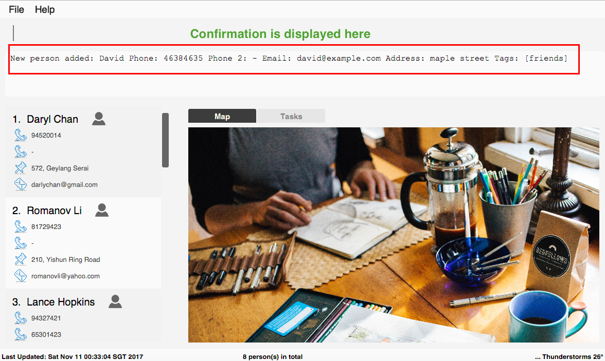
4.15. Locating persons by tag: search + tag name [Since v1.1]
Searches persons whose tag names contain any of the given keywords.
Command Format: search KEYWORD [MORE_KEYWORDS]
4.15.1. Examples
Your input |
Result |
|
Returns the contacts with tag "friends", e.g. |
|
No match will be returned, |
4.15.2. How to use
-
Input the command to search contact of the same tag, e.g. friends.

-
The image below demonstrates the result of the above searching.
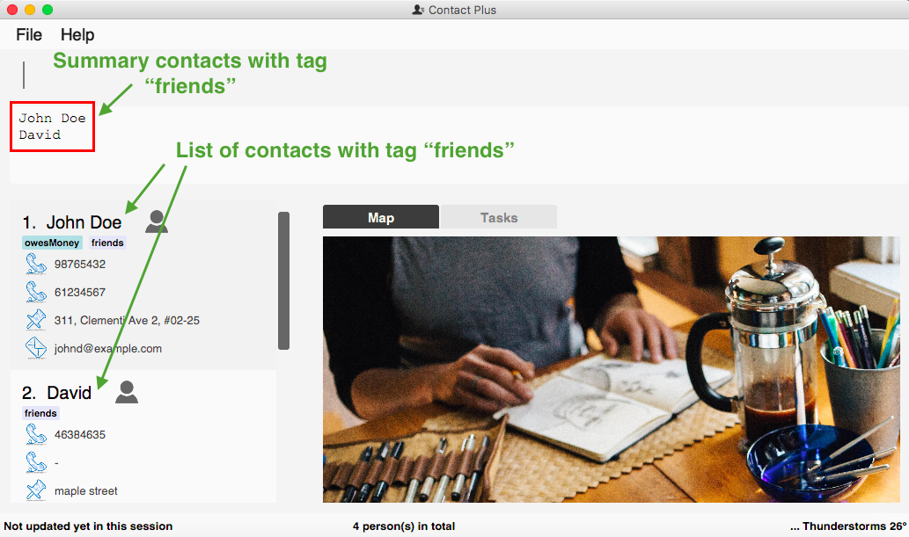 ---
4.16. Add second phone number for a person [Since v1.1]
Add the second phone number for a person by using prefix "p2/"
Format: COMMAND_WORD PARAMETERS p2/PHONE_NUMBER OTHER_PARAMETERS
Examples:
* add n/John Doe p/98765432 p2/73624789 e/johnd@example.com a/John street, block 123, #01-01
* edit 1 p/91234567 p2/73624789 e/johndoe@example.com
4.17. Locating persons by multiple criteria: multifilter [Since v1.1]
Finds persons whose names, phone no., emails and addresses,
match a set of specified criteria.
Format: multifilter [n/NAME] [p/PHONE NO.] [e/EMAIL] [a/ADDRESS]
Quick demo: here
4.17.2. Examples
Your input |
Result |
|
Returns contacts whose address contain |
|
Returns all contacts |
|
Returns contacts who match ALL of the following criteria: 1. Name contains An example of a matching contact for this command would be |
4.17.3. How to use
-
Enter
multifilterinto the command box followed by one or more format fields. See command format here.
-
Press the ENTER key. The results are displayed based on the criteria that you have entered.

| If no filters are used, all contacts will be displayed. |
4.18. Autocomplete command names [Since v1.2]
Lazy to memorize command names? Press a shorcut key to automatically complete the text that you enter into the command box.
Format: [Some text]
Quick demo: here
This feature automatically completes/suggests names of commands.
To automatically fill in the format of commands, see extended autocomplete.
|
4.18.2. Examples
Your input |
Result |
|
Expands to |
|
Nothing is returned by |
|
Returns various command suggestions in the result pane. e.g. |
4.18.3. How to use
Enter some text into the command box (as shown below) and press TAB. Commands, whose names start with the text you typed, will be suggested in the result pane. See description for more details on how autocomplete works.

If there is only one command whose name starts with the text that you
entered, then the full name of the command will be automatically filled in for you.
For example, if you type h and press TAB, help will be filled into the command box.
|
4.19. AutoCorrect command [Since v1.2]
Corrects misspelt command whose names start with the command entered from the user.
Application will notify the user that the command entered is corrected and perform the corrected commmand.
Format: [misspelt command]
| Auto-correct is not designed for alias. |
4.19.1. Examples
Your input |
Result |
|
will match to |
|
will not match to any command, application will display "Unkown command". |
|
will be matched to |
|
will not match to any command, application will display "Unkown command". |
4.19.2. How to use
-
The image below demonstrates the usage to autoCorrect "deleet".
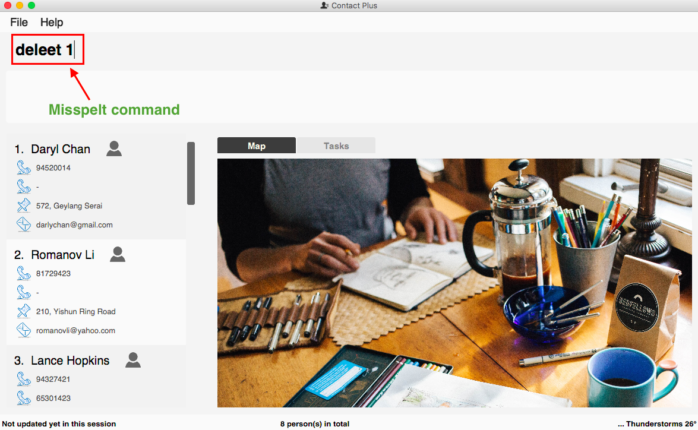 -
The image below is the result returned by Contact Plus using the command above.
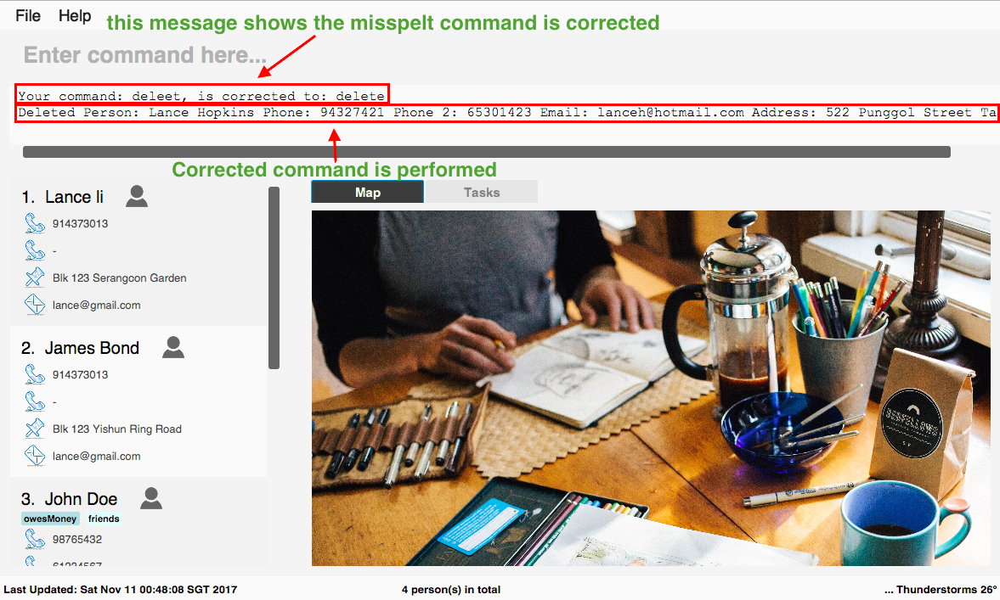
4.20. Deleting multiple persons : delete index/another index/… [Since v1.2]
This command allows you to delete multiple contacts from Contact Plus in a
single command.
Format: delete INDEX/INDEX
4.20.1. How to use
1) Enter list into the Command Box. You will see all the added contacts below.
2) Enter delete 2/3 to delete the 2nd and 3rd person from Contact Plus.

3) You can now see that the 2nd and 3rd contact has been deleted and the
result is displayed to show the confirmation of deletion.
4.20.2. Example
Your input |
Result |
Note that |
Deletes the first and second contact displayed by the |
4.21. Viewing Weather Forecast [Since v1.3]
Viewing weather forecast on Yahoo Weather page. Accessible from File dropdown list, Weather Forecast menu item.
4.21.1. How to use
-
The button Weather Forecast is located as the image shown below.

-
The expected page would be as follows:

4.22. Extended autocomplete for commands [Since v1.3]
Some commands such as add are very long and difficult to type.
This feature enables you to automatically fill in the format of the command whose name matches
the text that you entered.
Format: [COMMAND_WORD]
Quick demo: here
This feature automatically fills in the format of a correctly
spelt command. To automatically complete a command name, see autocomplete.
|
4.22.2. Examples
Your input |
Result |
|
expands to |
|
exapnds to |
|
|
|
|
LIST |
|
4.22.3. How to use
-
Enter the full name of the command that you wish to use. For example,
add.
-
Press the Ctrl key. The command’s format is automatically filled in the command box for you. The help text, which explains how to use the command, is also displayed in the result pane.
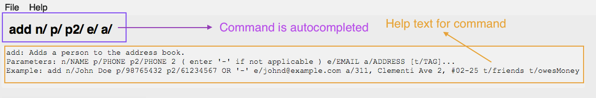
-
Add any additional information (based on the help text) should be typed into the command bar.
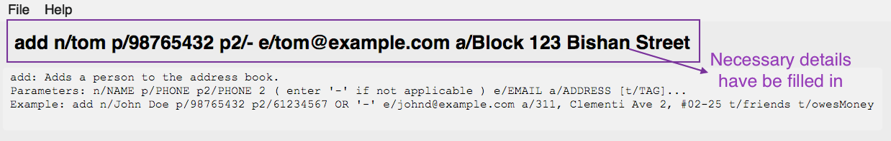
-
Press ENTER. The result of the command is displayed in the result pane.
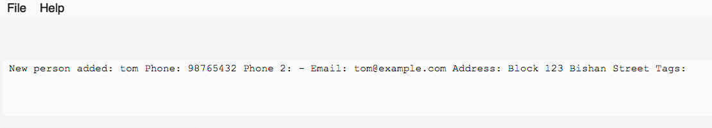
If you type the name of the command wrongly, extended autocomplete will not work.
|
4.23. Keyboard shortcuts [Since v1.3]
Keyboard shortcuts enables users to quickly get the command words without heavy memorization. Format: CONTROL + KEY
| The keyborad shortcuts are created only for commands with heavy text input or frequently used commands. |
4.23.1. Available Keyboard shortcuts
Command |
Keyboard shortcut |
|
control + a/A |
|
control + m/M |
|
control + e/E |
|
control + s/S |
|
control + d/D |
|
control + f/F |
|
control + c/C |
4.24. Add tasks [Since v1.3]
Add personal tasks into Contact Plus.
Format: task d/DESCRIPTION pr/PRIORITY(0/1/2) on DUE DATE(dd/MM/yyyy)
Examples:
-
task d/CS2103 Assignment pr/2 on 26/10/2017 -
task d/Finish Teammate Feedback Session pr/0 on 01/11/2017
4.25. List tasks [Since v1.4]
This command enables you to retrieve personal tasks that you have stored in
Contact Plus.
Format: listtask
Quick demo: here
4.25.2. How to use
-
Click on the
Taskstab.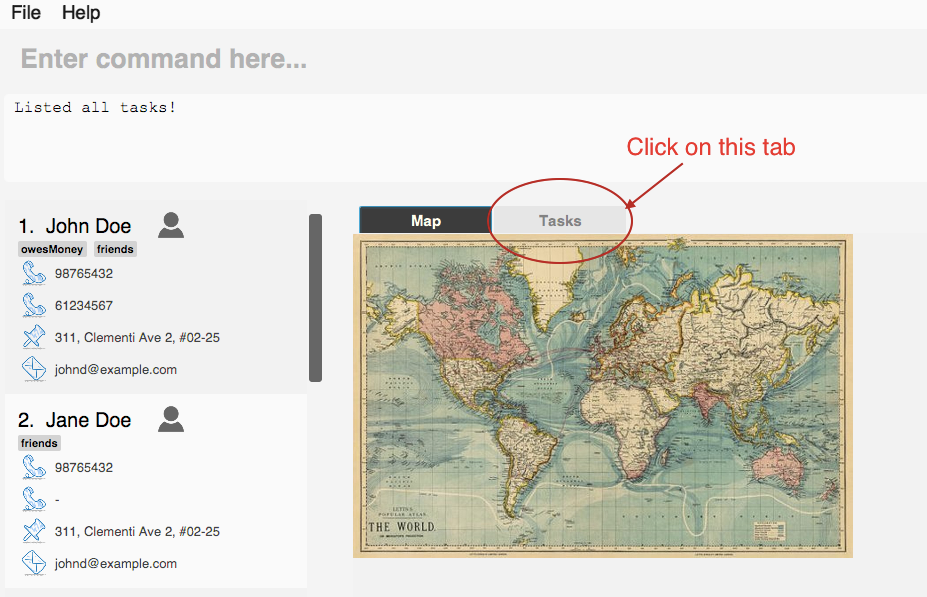
-
The user interface now shows a yellow text-area.
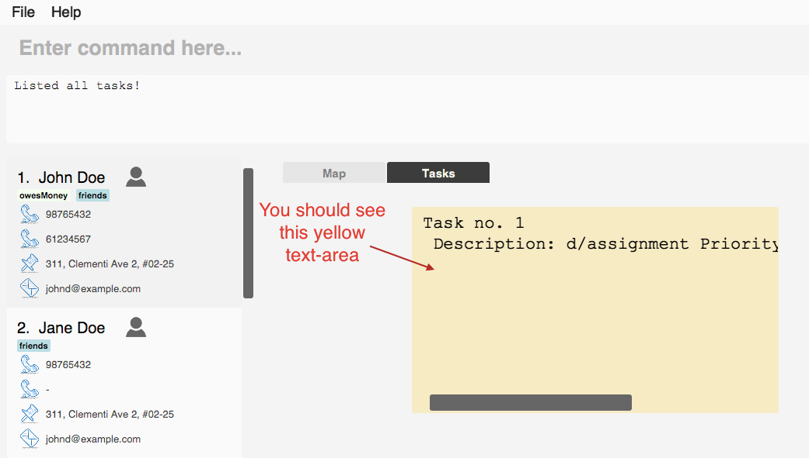
-
Type
listtaskinto the command box.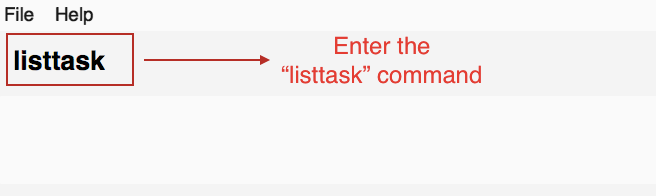
-
Hit the ENTER key. All your tasks will be displayed in the yellow text-area as shown below.
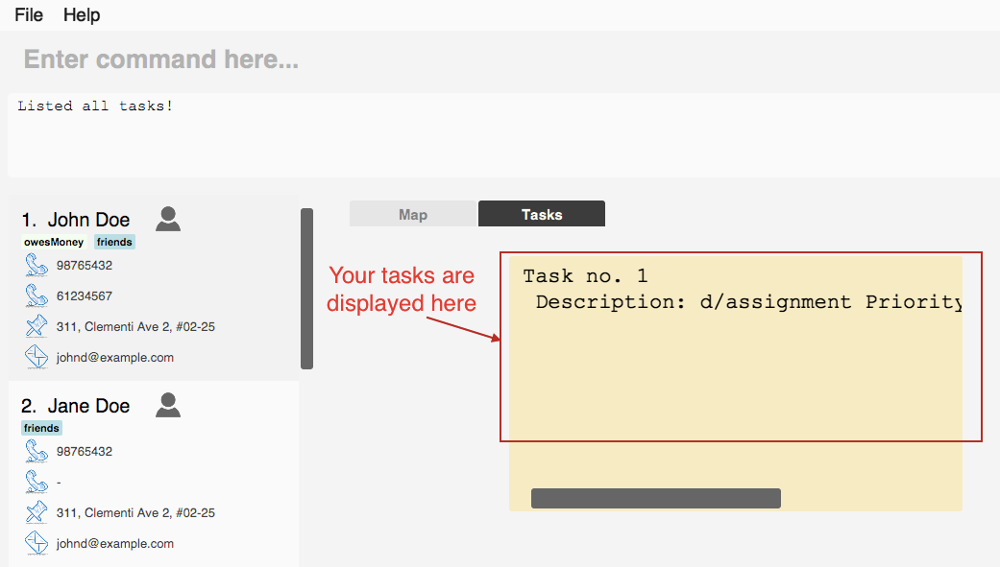
4.26. Delete tasks : deletetask
This command enables you to remove unnecessary/unwanted tasks
from Contact Plus.
Command Format: deletetask INDEX_1/INDEX_2/INDEX_3 …
4.26.2. Examples
Your input |
Result |
|
Deletes task no. 1 from |
|
Deletes tasks no. 1 and 2 from |
|
An error message is shown as task numbers cannot be negative. |
4.26.3. How to use
-
Use the
listtaskcommand to display all your tasks. Note the number of the tasks that you wish to delete.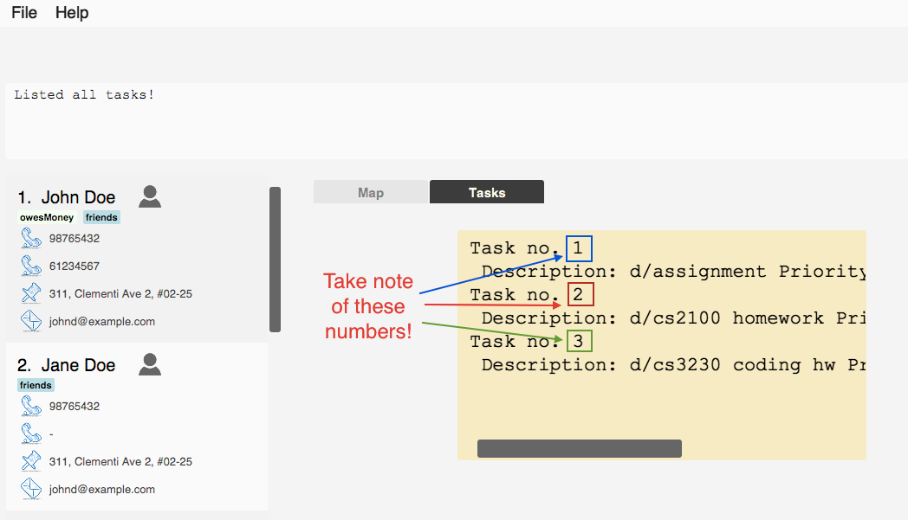
-
Type
deletetask INDEX_1/INDEX_2 …into the command box.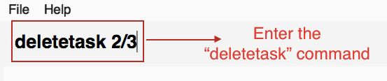
-
Hit the ENTER key. You will see the following success message if the command was successful.
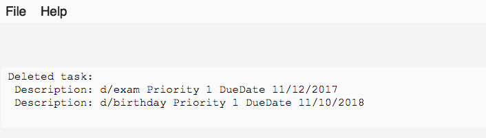
-
Observe that the tasks that you have specified in the previous step have been deleted from
Contact Plus.
4.27. Sound effect for system events [Since v1.3]
Various sound clips are played for each system events (see 3.27.1) to keep you informed of the status of your actions.
4.27.2. Example
Your input |
Result |
|
Success sound clip is played if command is successful. Failure sound clip is played if command is unsuccessful. |
4.28. Edit task [Since v1.4]
To edit your tasks, first you should learn how to list task. Listing tasks is for you to get the index of the task you indent to edit.
Then use "edittask" command with its index to edit the task. The format is as follows:
Format: edittask INDEX d/DESCRIPTION priority/PRIORITY(0/1/2) on DUE DATE(dd/MM/yyyy)
4.28.2. How to use
-
Enter the command, the index of the task, and the details you wish to edit with its prefix. Please refer to the image below for an example:
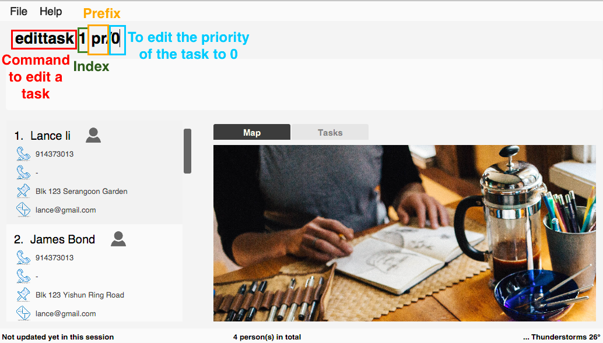
-
The application will give you conformation information displayed. Please refer to the image below for an example:
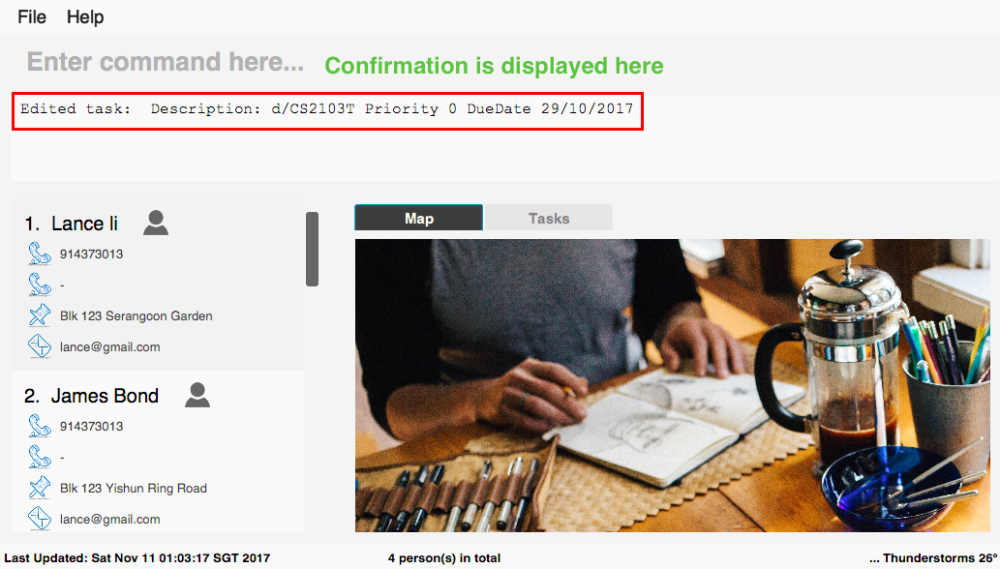
4.28.3. Example
Your input |
Result |
|
The application will display "Edited task: " + the details of the task you just edited. |
|
The application will display "Edited task: " + the details of the task you just edited. |
4.29. Clear task [Since v1.4]
To clear your task list, "cleartask" is the command to use. The format is as follows:
Format: cleartask
4.29.2. How to use
-
Enter the command "cleartask". Please refer to the image below for an example:

-
Confirmation message will be displayed. Please refer to the image below for an example:

4.29.3. Example
Your input |
Result |
|
"Task list has been cleared." will be displayed on the window |
4.30. Switch theme [Since v1.5]
If you are not happy with the current theme and want to select a new theme, use switch command with the index to
switch to the theme you like.
Format: switch INDEX
4.30.1. Description
-
Index must be 1, 2 or 3 only. Other values are deemed as invalid.
-
The command is not undoable. But you can switch back to the original theme by performing the command again.
-
Once you update the theme, your preference will be saved. The next time you open Contact Plus, it will not set back to default theme.
-
Default themes in Contact Plus are Dark, Light and Colourful. Below are the preview of 3 themes:


4.30.2. How to use
-
Enter the command
switch, together with index of the theme. (1stands for DarkTheme,2stands for LightTheme and3stands for ColourfulTheme) -
Once the command is successfully executed, the theme of Contact Plus will be updated immediately.
4.30.3. Example
Your input |
Result |
|
|
4.31. Tab Switching [Since v1.5]
You can choose to switch between the Task tab or Map tab either by clicking on the user interface or
the application will automatically switch it for you based on the command you entered.
4.31.2. Example
-
Before entering any command, you are at the
Tasktab. -
Enter command
delete 1/2and press ENTER. -
The tab will be automatically switched to the
Maptab.
4.32. Tag use emoji : tag emoji [Coming in V2.0]
Input characters to represent an emoji as a tag.
Format: tag :wink:
4.33. Add non-English words as input [Coming in V2.0]
Input non-English words to be saved in the application. Format: CommandWrd + inputText
4.34. Add push notification [Coming in V2.0]
The application will prompt notifications for users on the computer for the up coming tasks.
4.35. Saving the data
Address book data are saved in the hard disk automatically after any command that changes the data.
There is no need to save manually.
5. Command Summary
Function |
Input command |
Example |
|
|
|
|
|
|
|
|
|
|
|
|
|
|
|
|
|
|
|
|
|
|
|
|
|
|
|
|
|
|
|
|
|
|
|
|
|
|
|
|
|
|
|
|
|
|
|
|
|
|
|
|
|
|
6. Keyboard Shortcuts Summary
Command |
Keyboard shortcut |
|
control + a/A |
|
control + m/M |
|
control + e/E |
|
control + s/S |
|
control + d/D |
|
control + f/F |
|
control + c/C |
7. Command Alias Summary
Commands |
Alias |
|
|
|
|
|
|
|
|
|
|
|
|
|
|
|
|
|
|
|
|
|
|
|
|
8. FAQ
Q: How do I transfer my data to another Computer?
A: Install the app in the other computer and overwrite the empty data file it creates with the file that contains the data of your previous Address Book folder.
Q: How do I view Contact Plus application?
A: Download the jar file here from our github page, and run the jar file to get our application started.
Also you can refer to the Quick Start session.
Q: How many contacts I can save in Contact Plus?
A: Currently we do not set a limit on the number of contacts that you can save on out application.
Q: How do I view tasks in Contact Plus?
A: Simply click Task at the center of the application window, and input command listtask in the command window. You can toggle between Map and Task by clicking between Map and Task.